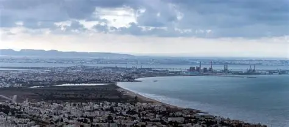

Site archéologique de Maxula Prates (Radès)
Ancienne cité romaine située à Radès, Maxula Prates était un important port de commerce durant l'Antiquité. Les fouilles archéologiques ont révélé des vestiges de thermes, de villas romaines et de structures portuaires témoignant de la prospérité de cette ville antique.